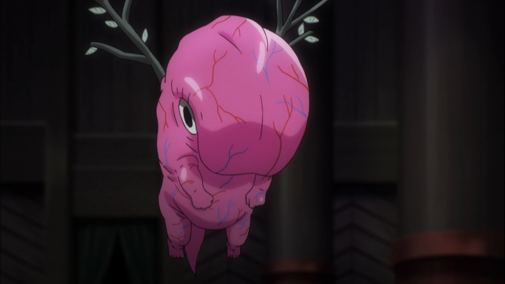

Home
AinzOoalGown
Albedo
Shallterar Bloodfallen
Aura Bella Fiora,Mare Bello
Demiurge
Cocytus
Sebas Tian
Victim
Pandora's Actor
Pleiades
Victim

- Name:Victim
- Titles: Sacrificial Fetus
- Gender: Unknown
- Race: Angel
- Affiliation: Great Tomb of Nazarick
- Occupation: 8th Floor Guardian
- Total Level: 35
- Racial Level: Angel (10), Archangel (10), etc (9)
Victim is an unique case among the Guardians of Nazarick due to his many unique traits. First of all, despite being angel, Victim has a… weird appearance of a pink fetus with angelic halo and stick-like, feather-less wings.
Victim is rarely seen and his level is the lowest among all the NPCs in Nazarick. To this state, some people may ask: why he is put in charge of the 8th floor? The answer is that: although he has low level (35), he possesses an unique ability which sacrifices himself to restrict enemies’ movement.
This may sound insignificant but in fact, this ability is extremely devastating given its usage along with his low level and appearance. According to the Light Novel, there was an invasion from 1500 players back to the days when Momonga hasn’t transferred to New World yet. They managed to invade to the 8th floor; however, they were stopped by Victim, thus leading to their demise.
Since resurrecting a NPC of level 100 can cost tons of money, the guild intentionally put him at level 35 so that he can be used repeatedly without costing too much resources. And like all other denizens of Nazarick, Victim is extremely loyal towards the supreme leaders of Nazarick.